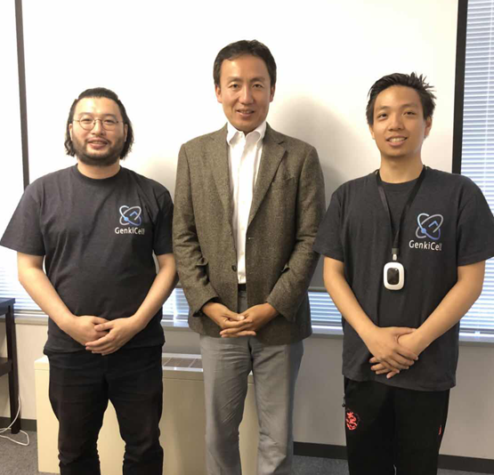
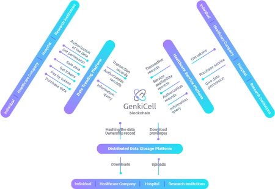

JMDC cooperates with Genkicell Chain!元気いっぱい!
Recently, the JMDC(Japanese Medical Data Center) officially entered into a strategic cooperation intention with the Genkicell chain, and further improved the data application of JMDC through the blockchain technology of the Genkicell chain, reducing costs and reducing hardware consumption. This collaboration will be seen as bringing the greatest innovation to the Japanese healthcare and health industry.

Left：Mr. Shota Awata （Genkicell CEO）
Middle：Mr. Matsushima Yousuke （JMDC CEO）
Right：Qi Lin （Genkicell Partner）
The Japan Medical Data Center (JMDC) was established in 2002 to expand the range and analysis of medical data and generate more and more output. This will enhance the ability of everyone in the society to access quality health care and contribute to the health of the Japanese medical community. JMDC cooperates with many well-known Japanese pharmaceutical companies, health insurance research institutes, insurance companies, etc. to conduct medical health data collection and analysis, and has a large number of actual and objective data on the visibility of personal prevention, treatment prevention and long-term care. Continuously create multiple patents, such as claims (hospital, outpatient, pharmacy) document generation system (standardization of medical data), medical information management system and medical information management method claims management and qualification information, computer programs, terminals, methods and servers (daily Healthy age).
JMDC has perfected PHR (Personal Health Record) through reliable data from major Japanese hospitals and pharmaceutical companies. In addition, JMDC has launched an electronic prescription in cooperation with Japan's major pharmacies. According to the purchaser's purchase behavior record, psychosocial information and index parameters after taking the drug, the risk of the user taking a certain drug can be revealed. This is conducive to the precise prescribing of medical staff and the later tracking of the patient's physical condition. The combination of PHR data and e-prescription combined with telemedicine technology can make a good medical solution even in remote areas, where the basic level of medical care and reading ability are low. Telemedicine technology can be said to be the embryonic form of the medical community, and it can also play a reference role in China's medical reform.
However, PHR's data collection channels are relatively limited, medical data is not spontaneously generated, the cost of collection is huge, and the uploaded data is not complete. In the implementation of telemedicine technology, the amount of data diagnosis is large, the transmission process is slow, and the hardware requirements are very high, which restricts the further development of PHR. The Genkicell chain utilizes the blockchain technology to acquire data at a lower cost. The IPFS protocol is used to store the marked health data in a distributed system. The private key in the transaction sub-directory will be given to the user to read the encrypted IPFS. The authority of the data to ensure the security of medical data. IPFS itself has high transmission speed, high reliability and no storage limit, and provides modular building customization requirements, focusing on ecological landing.
The addition of JMDC has made the Genkicell's vital health ecosystem PLHR (Personal Life Health Record) more complete, and the data information is more abundant and accurate. Through the blockchain technology, the data is classified into EMR and PHR data through daily distributed standardization judgment in the massive judgment node, and the data is filtered and optimized, so that the data structure conforms to the applicable standard of EHR, and the feature database is continuously improved. The value of these labeled and screened data will be gradually applied to improve current health services such as grading, large health management, telemedicine, cognitive diagnostic aids, and side effects studies. Future health and medical services will use PLHR to select the most effective treatment solution for the individual.

Genkicell Operation Process
Working with JMDC will undoubtedly make the data on the chain of Genkicell chain more realistic and accurate, and the richness and data value of PLHR will gradually increase. It also makes JMDC's medical data collection and analysis more convenient and accurate, and more and more accurate and effective output to better serve the Japanese medical community and society.